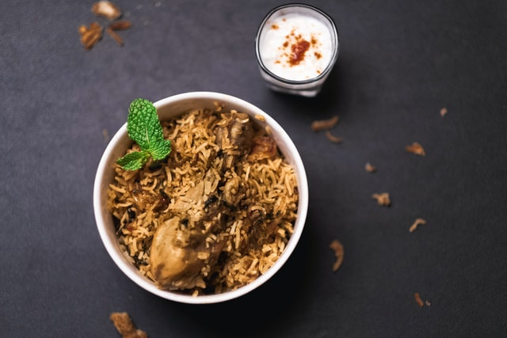

Biryani, the taste of a 400-year old city!
This recipe will teach you how to make Chicken Biryani, The hyderabadi style

Let's start with the Ingredients
- 1 cup boiled basmati rice
- 1/2 teaspoon mint leaves
- 2 tablespoon refined oil
- 3 green cardamom
- 2 clove
- 2 onion
- 1 teaspoon turmeric
- 1 tablespoon garlic paste
- 1 cup hung curd
- 2 tablespoon coriander leaves
- water as required
- 1 tablespoon ghee
- 600 gm chicken
- 1 tablespoon garam masala powder
- 1 teaspoon saffron
- 1 tablespoon bay leaf
- 1 black cardamom
- 1 teaspoon cumin seeds
- 4 green chillies
- 1 tablespoon ginger paste
- 1 teaspoon red chilli powder
- 1/2 tablespoon ginger
- 2 drops kewra
- 1 tablespoon rose water
Now that we are ready with ingredients , let's jump to recipe
- Soak saffron in water to prepare saffron water
- Mix kewra drops in water and mix well to make kewra water.
- Chop the onion and coriander leaves and keep them aside.
- Heat refined oil in a deep bottomed pan. Once the oil is hot enough, add cumin seeds, bay leaf, green cardamom, black cardamom, cloves in it, and saute for about a minute.
- Add chopped onion to it and saute until pink.
- Add chicken into it with slit green chillies, turmeric, salt to taste, ginger garlic paste, red chilli powder and green chilli paste.
- Mix well all the spices and cook for 2-3 minutes.
- Add hung curd into it and give a mix. (Make sure the chicken is washed properly and patted dry before adding it to the dish)
- Turn the flame to medium again and add garam masala in it along with ginger julienned, coriander and mint leaves.
- Add kewra water, rose water and saffron water in it.
- Cook till the chicken is tender.
- Add 1 cup cooked rice and spread evenly.
- Add saffron water and pour ghee over it.
- You can now cook the dish without the lid or cover it with a lid to give a dum-effect due to the steam formation.
- Cook for 15-20 minutes with a closed lid and garnish with 1 tbsp fried onions and coriander leaves.
Your Chicken BIryani is ready!